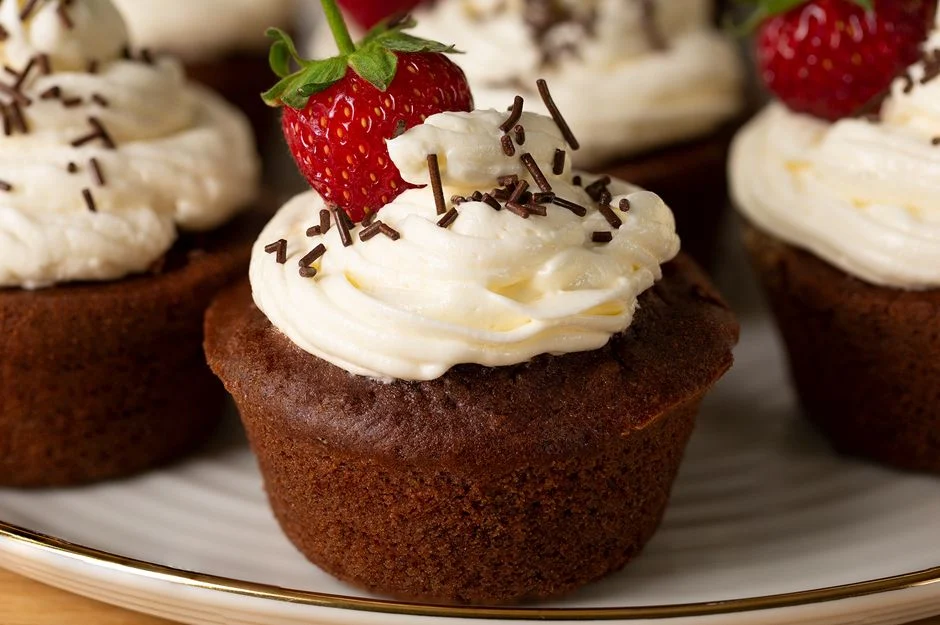
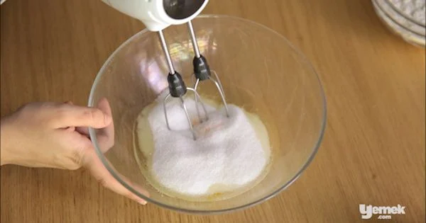
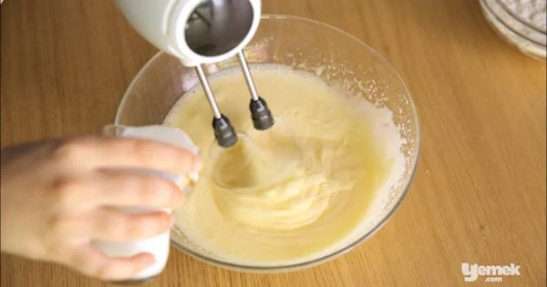
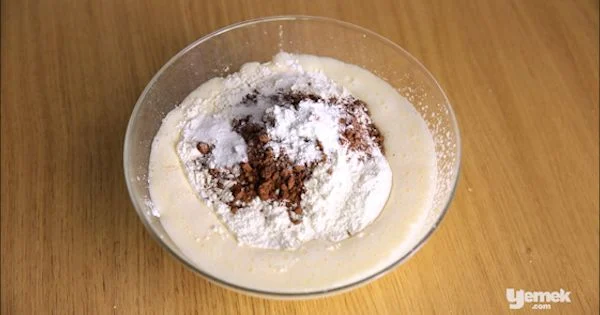
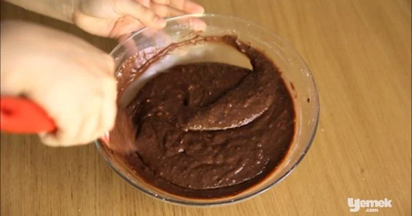
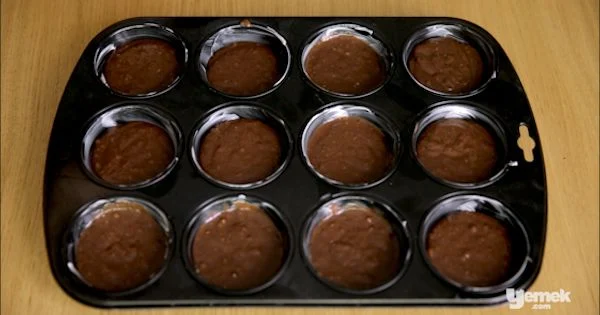
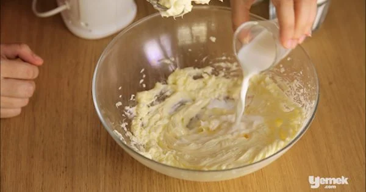
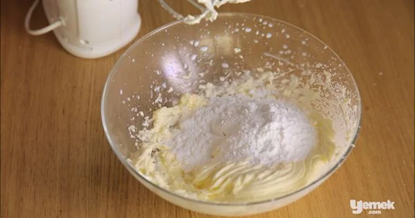

Herkese Merhaba. Bu yazımızda sevenleri için çikolatalı cupcake in nasıl yapılacağını anlatacağım.

Çikolatalı Cupcake'imiz böyle gözükecek
Öncelikle temin etmemiz gereken malzemeleri ayarlamalıyız.
Keki için
2 adet yumurta
1 su bardağı toz şeker
2 yemek kaşığı eritilmiş tereyağı
1/2 çay bardağı sıvı yağ
1 çay bardağı süt
2 su bardağı un
2 yemek kaşığı kakao
1 paket vanilya
1 paket kabartma tozu
Kreması için
1 paket yumurta
200 gram tereyağı
4 yemek kaşığı süt
1 su bardağı pudra şekeri
Gelelim yapılışına
2 adet yumurtayı 1 su bardağı toz şekerle birlikte çırpın.

Ardından üzerine sırasıyla 2 yemek kaşığı eritilmiş tereyağı, yarım çay bardağı sıvı yağ ve 1 çay bardağı süt ilave ederek çırpma işlemine devam edin.

Üzerine 2 su bardağı un, 2 yemek kaşığı kakao, 1 paket vanilya ve kabartma tozu ilave edin.

Spatula yardımıyla güzelce karıştırın.

Hazırladığınız harcı yağlanmış kalıplara pay edin ve daha önceden ısıtılmış 175 derecelik fırında yaklaşık 20 dakika kadar pişirin.

Kreması için; 200 gram oda sıcaklığında tereyağını kremamsı bir kıvam alana kadar çırpın. Üzerine 4 yemek kaşığı süt, 1 paket vanilya ilave edip çırpmaya devam edin.

Son olarak 1 su bardağı pudra şekerini ekleyin ve bütünleşene kadar karıştırmaya devam edin.
